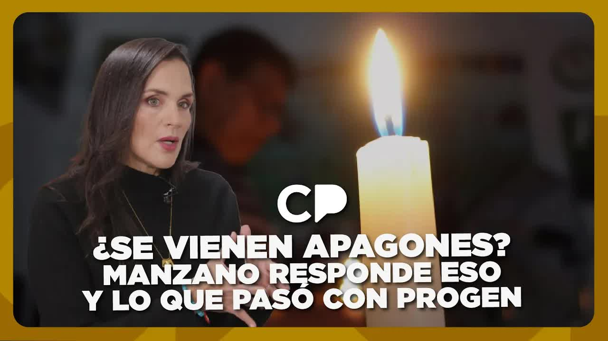
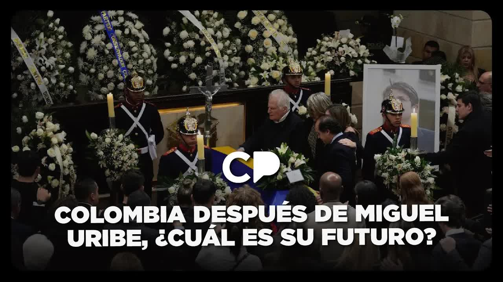

Aug 12, 2025 · Café · The deaths of 12 babies at the Hospital Universitario
On Friday, August 8, 2025, Andersson Boscán reported that 18 newborns had died at the Hospital Universitario in Guayaquil and that the ward was reusing cannulas. The hospital denied it in a statement and the Health Ministry denied it to reporters. A day later the ministry acknowledged 12 deaths and admitted that two were caused by the KPC bacterium. The hospital manager was fired, the regional coordinator was removed, the Attorney General's Office (Fiscalía) opened a preliminary investigation and the National Assembly began an oversight inquiry. A week later the journalist's WhatsApp inbox was flooded with doctors, nurses and families telling the same story about other hospitals.

On Friday, August 8, 2025, in his Café La Posta column, Andersson Boscán reported that 18 newborns had died at the Hospital Universitario in Guayaquil and that the cause lay in the ward itself: cannulas had been reused. The official response came that same day. The hospital issued a statement denying the story. The Ministry of Public Health denied it to the reporters who called to ask whether it was true. The ministry's communications office refuted the report.
A day later the ministry changed its story. It confirmed the deaths of 12 newborns, said it was investigating and ordered an audit to establish the cause. The official version held that this was not a supply shortage but other kinds of situations. The case became the talk of the country. On Tuesday, August 12, in the middle of the government's march against the Constitutional Court, comments on the show asked for a word of comfort for the babies' parents.
It was not the first time that hospital had appeared in one of Boscán's investigations. In 2019, in the series Ministry of Death, La Posta published an internal report that counted 46 preventable neonatal deaths at the Hospital Universitario in Guayaquil between weeks 1 and 18 of 2018, compared with 71 in the whole previous year. That series ended with the departure of Health Minister Verónica Espinosa and her censure by the National Assembly. Seven years later, the same neonatology ward was counting its dead again.
Eighteen newborns dead and oxygen cannulas reused in the neonatology ward.
The hospital denies the report in a statement and the ministry refutes it to reporters.
A day after the denial, the ministry confirms twelve deaths and announces an audit.
The Presidency acknowledges two newborns died with the bacterium. The Attorney General's Office opens a preliminary investigation.
The hospital manager is fired and the regional coordinator is removed. The National Assembly opens its own investigation.
By August 12 the state's response had taken shape. The hospital acknowledged 12 dead newborns and said that only two, in theory, had died from the bacterium. The presidential spokeswoman, Carolina Jaramillo, confirmed that day that two newborns died with KPC. The Attorney General's Office opened a preliminary investigation into the deaths of the 12 babies. Health Minister Jimmy Martin confirmed on social media that the manager of the Hospital Universitario had been fired and announced psychological support for the parents. The National Assembly opened an oversight inquiry in its Children's Committee.
The fired manager, according to Boscán, had informed the ministry's regional coordinator in writing that there was an infection problem in the neonatology unit. The regional coordinator was also removed. Humberto Plaza, newly appointed governor of Guayas, went to the hospital and sent out photographs to show it was fully equipped. The mayor of Guayaquil, Aquiles Álvarez, said that if they needed money for a cannula they should ask him. Plaza replied that this was not the issue. The exchange between governor and mayor summed up that week's public debate.
I stand by it: it's not 12, it's 18.
Andersson Boscán, August 12, 2025
Boscán did not accept the official figure. He said he was reviewing documents to show that a disproportionate number of newborns had died at the Hospital Universitario in the past month, very likely from healthcare-associated infections, known as nosocomial infections. And he went further: the team suspected it was neither the first time nor the only hospital, and believed it had found documents proving that newborn deaths were being hidden under other categories.
His request was specific. The ministry had removed the manager and the regional coordinator, the Attorney General's Office had opened its investigation, the National Assembly was conducting oversight and the ministry itself had begun an internal investigation. What was missing was a look at the medical records: on death certificates doctors write down something general, sepsis or cardiac arrest, and only each patient's medical record shows which ones had infectious and bacterial conditions.
Those mothers and fathers deserve the truth. The country deserves the truth. Everyone who pays taxes and goes to a hospital deserves to be cured, not to leave as a corpse because someone didn't take enough care to maintain the asepsis a hospital deserves.
Andersson Boscán, August 12, 2025
After the report, Boscán changed his social media settings: anyone who messaged him privately received an automatic reply with his number and email address for sending information confidentially. The August 14, 2025, column reproduced a single day of that inbox. It was full of doctors, nurses, interns, residents and patients of the system. Mónica Velásquez, who was traveling with him, listened, scolded him when he answered coldly and asked him to treat people with more humanity.
The first voice note arrived at 6:50 a.m. A woman said her partner had died on Sunday, August 10, at the Hospital Carlos Andrade Marín in Quito, after 31 days in intensive care. A tracheal secretion test confirmed the bacterium was KPC, the same one that affected the newborns in Guayaquil. She paid for the test herself, because the hospital did not have a working microbiology unit. The documents the hospital gave her said her partner had died of something else, something general, sepsis.
A nurse at the Hospital del Guasmo reported that they had no povidone, the disinfectant used to clean skin and instruments before surgery; that they washed instruments with water; and that there was no soap to wash their hands before operating. A worker at the Monte Sinaí hospital wrote that they were forbidden from sending patients out to buy what was missing, to protect the image of a hospital that had nothing. A cleaning worker at the Playas hospital had gone seven months without pay.
A Health Ministry source in Guayas said that Michelle Jiménez, the regional coordinator who did nothing for the newborns at the Hospital Universitario, had been placed in a new post that day and welcomed with blue flowers. And a former medical malpractice auditor at the Hospital Teodoro Maldonado Carbo in Guayaquil, fired when she began investigating and holding a court order for her reinstatement that was never carried out, described a pattern in neonatal intensive care units: every baby admitted weighing 900 grams or less is recorded as a stillbirth, as if born dead, or given a generic cause of death that won't get anyone in trouble.
At 8:30 p.m. a young doctor from the Hospital del Guasmo Sur wrote in. A year earlier, as an intern, she had watched newborns die one after another, all with KPC. There was no air conditioning, the heat turned the delivery room into a breeding ground and cesarean sections were performed in sweltering operating rooms with no asepsis control. She stopped counting when they reached ten. There were dozens, she said. Nobody investigated. It never made the news.
Here people don't die because they're sick, but because they're poor.
A doctor at the Hospital del Guasmo Sur, quoted by Andersson Boscán on August 15, 2025
The column reached a single conclusion: the health system was in intensive care, and politicians, depending on whether they were in government or opposition, were thinking about how to hide the problem or how to exaggerate it. Boscán proposed taking the microphone away from politicians and handing it to doctors, who are asked to solve everything without resources and, above all, to keep quiet.
On August 15, public health physician Esteban Ortiz, of the Universidad de las Américas, explained on Café La Posta what was known about the outbreak. KPC is a carbapenemase-producing Klebsiella pneumoniae, a multidrug-resistant hospital bacterium of the kind found in intensive care units. Ecuador had already had an Enterobacter cloacae outbreak in 2024. In the reports on the two officially acknowledged newborn deaths, Ortiz identified a delay in processing blood cultures and the absence of a permanent staff infectious disease specialist at the hospital.
On where the protocol broke down, Ortiz listed the hypotheses the investigation needed to resolve: that the operating rooms, neonatal intensive care units or incubators were not cleaned; that high-flow cannulas, which are more expensive, were reused; or that on-call staff did not wash their hands or maintain asepsis when moving from one patient to another. Behind it all he placed a figure: over the past four years the health budget was cut by more than 400 million dollars, and one of the line items affected was outsourced cleaning services.
This is an outbreak that shouldn't happen in a hospital system in the 21st century.
Esteban Ortiz, public health physician, August 15, 2025
That same day assembly member Luis Fernando Molina, of the Revolución Ciudadana party, described what he had seen on tours of hospitals in Mejía and Rumiñahui: food service, security and cleaning staff who had gone six to eight months without pay, and directors swapping medicines about to expire between hospitals to cover shortages. His colleague Viviana Veloz was seeking information in the Health Committee about the deaths of the babies at the Hospital Universitario. Molina asked for the health minister to appear before the Constitutional Guarantees Committee: he had gone 50 days without a response to his requests for information.
The diagnosis matched from opposite sides. Three days earlier, asked by Boscán, ruling-party assembly member Adrián Castro had admitted that in two years of government five ministers had passed through the health portfolio and people still had no medicine. Ortiz put it in management terms: with five ministers in 18 months, no official signs off on multimillion-dollar procurement, supplies and medicines are not purchased, and it all ends up in the care people receive.
In one week the report achieved what the state usually takes months to do. The hospital and the ministry went from denying the deaths to acknowledging 12 and admitting two from KPC. The manager of the Hospital Universitario, who had warned in writing about the infections, was fired. The regional coordinator was removed and reassigned. The Attorney General's Office opened a preliminary investigation, the ministry an internal audit and the National Assembly an oversight inquiry in the Children's Committee, with requests for information in the Health Committee.
What was not resolved was the number. The investigation maintains that 18 died, not 12, and that the medical records would show how many had infections that the death certificates hide under sepsis or cardiac arrest. The testimonies in the WhatsApp inbox pointed to the same mechanism at other hospitals: newborns recorded as stillbirths, dozens of newborns dead with KPC at the Guasmo Sur without anyone investigating, a patient dead from KPC in Quito with a certificate that said something else. As of August 15, 2025, none of those allegations was the subject of an open investigation.
The health system is in intensive care and politicians aren't thinking about how to bring it back to life, they're thinking about hiding the problem or exaggerating the problem, depending on whether they're in government or in the opposition.
Andersson Boscán, August 15, 2025
Updated September 5, 2026
The Ministry of Death series publishes an internal report with 46 preventable neonatal deaths at the Hospital Universitario in 18 weeks of 2018.
Boscán reports 18 newborns dead and reused cannulas. The hospital denies it in a statement; the ministry, to reporters.
A day after its denial, the Health Ministry confirms the deaths of 12 newborns and announces an audit.
A patient dies at the Hospital Carlos Andrade Marín after 31 days in intensive care. His partner pays for the test that confirms KPC.
Carondelet acknowledges two newborns died with KPC. The Attorney General's Office opens a preliminary investigation. Minister Jimmy Martin confirms the manager's firing. Boscán stands by 18.
The Children's Committee opens an oversight inquiry. The regional coordinator is removed.
Boscán reproduces in his column the messages from doctors, nurses and families at other hospitals.
Esteban Ortiz details the outbreak. Luis Fernando Molina calls for the health minister to appear before the National Assembly.
Minister of Public Health. Confirmed on social media that the hospital manager had been fired and announced psychological support for the parents.
Had informed the regional coordination office in writing about the infections in neonatology, according to Boscán.
Regional coordinator of the Health Ministry. Received the manager's report. A ministry source said she did nothing for the newborns.
Presidential spokeswoman. Acknowledged that two newborns died with KPC.
Newly appointed governor of Guayas. Visited the hospital and sent photos showing it was equipped.
Mayor of Guayaquil. Offered money for cannulas if the hospital needed it.
Revolución Ciudadana assembly member. Requested information in the Health Committee about the babies' deaths.
Public health physician at the Universidad de las Américas. Explained the outbreak and the broken protocols.
Denied the story in a statement on the same day as the column. Later acknowledged 12 dead newborns and said that only two, in theory, died from the bacterium.
Its communications office refuted the report to reporters. A day later it confirmed the deaths of 12 newborns, said they were not due to supply shortages and ordered an audit.
Acknowledged on August 12, 2025, that two newborns died with the KPC bacterium.
Confirmed on social media that the hospital manager had been fired and announced psychological support for the parents, among other measures.
Visited the hospital and sent photographs showing it was fully equipped. He told the mayor the problem was not money for a cannula.
Said that if the hospital needed anything, even money for a cannula, they should ask him.


You know who I think came to the march? Uh, welcome everyone. You know who I think came to the march? Mr. Jorge Romero, after so long I see him on the Café La Posta set and I think he came to the march. Jorge Romero is at La Posta. Yes, sir. Um, this scares me a little. I feel like the last time Jorge came someone got fired or nice things happen, right? They're probably going to fire peop…
Read the full transcriptedge of the bed, with La Moni still asleep, to listen to Lucía. Her husband died of KPC, the damn and [ __ ] bacterium uh that also affected the newborns at the uh Universitario hospital in the city of Guayaquil. He died on August 10, 2025. I look at the calendar because I'm very absent-minded. It's 4 days, barely 4 days, since Lucía lost her husband. So I understand the crying. It's fresh crying…
Read the full transcriptTranscripts from each show's automatic captions. They have not been corrected by hand: use them to find a phrase and jump to the exact minute in the video, not as verbatim quotes.
Manager fired, regional coordinator removed. The Attorney General's Office, the Health Ministry and the National Assembly opened proceedings. None had concluded by the time the shows aired.
The state acknowledges 12 deaths, two from KPC. The investigation maintains there were 18 and that newborn deaths are hidden under other categories.
This case file reconstructs the case from the shows of August 12 and 15, 2025. The original column of August 8, 2025, is not among the videos included. Relatives and sources from the WhatsApp inbox are quoted without names. The 2018 precedent comes from the Ministry of Death case file, published in 2019.